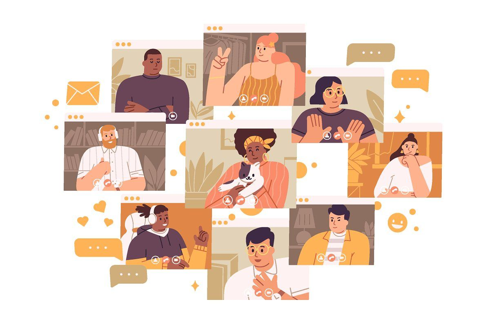
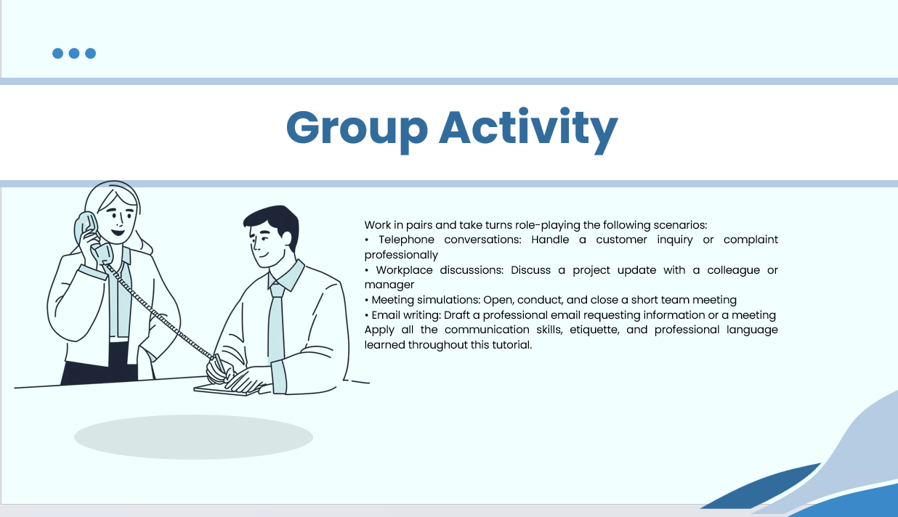

PROFESSIONAL SKILLS / SESSION 01
Telephone Etiquette & Email Netiquette
Professional communication through telephone conversations and emails.

Overview
Professional communication through telephone conversations and emails.
Learning outcomes
- Use polite language and listen effectively.
- Write well-structured professional emails.
- Create a positive impression through communication.
Our telephone role-play activity
Our class was divided into five groups. Two students from each group went to the front of the class to perform a telephone conversation.
My friend and I represented our group. We acted out a call between a company employee and a customer whose package was late for delivery. The activity gave us an opportunity to practise polite language, active listening, and professional communication when handling a customer concern.
My reflection
This session taught me the importance of professional communication through telephone conversations and emails. I learned how to use polite language, listen effectively, and write well-structured professional emails. It helped me understand how good communication creates a positive impression in the workplace.
Our telephone role-play

